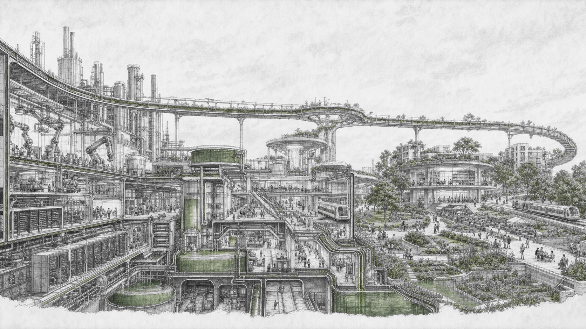
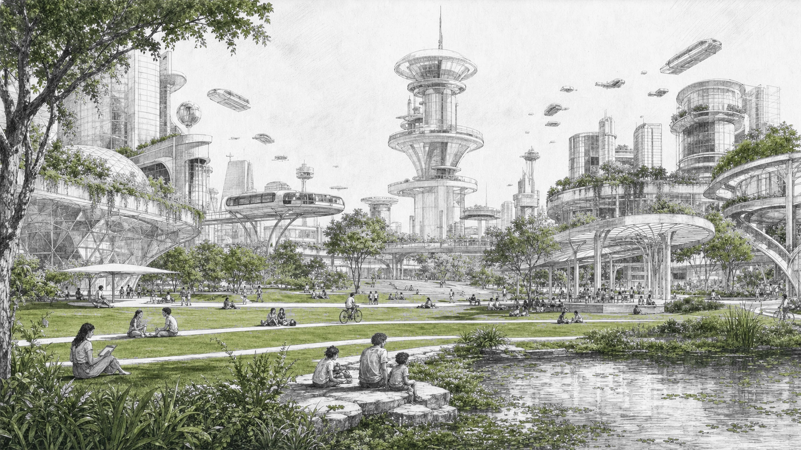
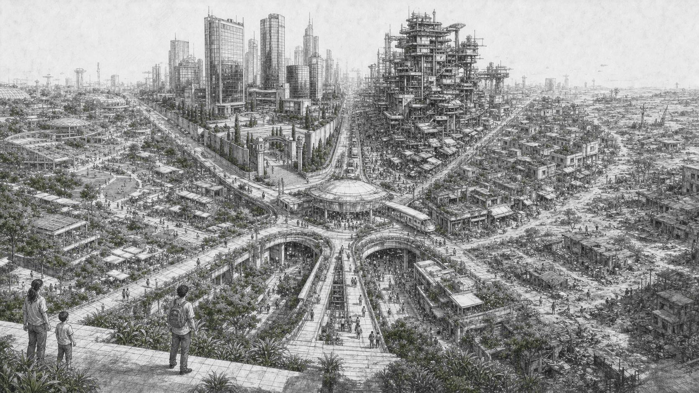

The important question is not whether machines can perform most cognitive work. It is what happens to income, status, and agency when that work becomes cheap and the remaining advantages are concentrated.
The long framework behind this note is a set of mechanisms and competing hypotheses, not a forecast. Its most useful move is to ask what has to be true for each social arrangement to hold together.
The loop has to close
Start with the economic circuit. The old loop was labor → wages → consumption. A post-AI loop would be AI labor → corporate revenue → tax → distribution → consumption. Human labor drops out of the middle. Taxation becomes the bridge that returns purchasing power to people who no longer earn it through wages.
This makes the material floor more than a welfare program. It is part of the market's plumbing. If most people lose purchasing power, consumer-facing revenue eventually loses its customer base. The floor is one possible answer to that contradiction, whether it arrives through a sovereign wealth fund, taxes, public ownership, or another mechanism.
- The floor. Automated production is taxed or publicly owned, then converted into housing, healthcare, mobility, education, food, or a cash-equivalent baseline.
- The peer economy. Attention and patronage differentiate people through subscriptions, tips, services, craft, hospitality, and community.
- Exceptional work. A smaller set of roles still commands wages because judgment, presence, trust, embodiment, or accountability remains scarce.
A floor can coexist with intense competition. People will still seek security, belonging, recognition, and a way to matter.

The middle hollows out
The old middle class depended on stable employment, predictable income, accumulating skills, and a visible path from junior to senior. Automation removes routine cognitive work, compresses skill premiums, and weakens the ladders that made those jobs worth entering.
The result is a bimodal labor market. A small group of orchestrators directs AI at scale and makes decisions that still require human judgment. A larger group competes for a shrinking pool of human-required tasks, often with volatile income and little autonomy. A third group can opt out because the floor is sufficient and status matters less to them.
The most difficult group is the trapped middle. The framework's sharper definition is psychological rather than occupational: people who want to stop competing but cannot stop caring about the game. They have enough to survive, but no credible route to winning the status system they were trained to enter.
The traits change too
The old path rewarded institutional fitness: conscientiousness, credentialism, patience, rule-following, and the ability to advance through a legible sequence. The new environment rewards agency, taste, conviction, resilience, authenticity, pattern recognition, narrative ability, risk tolerance, and the ability to act before the path is obvious.
The mismatch may be adversarial, not merely different. Risk aversion and risk tolerance point in opposite directions; deferred gratification can become hesitation; rule-following can become a liability when taste and conviction matter. Someone can be excellent at optimizing inside an institution and still miss which institution is forming around them.
The framework calls the new bundle sovereign fitness. The name is provisional, and the anti-correlation is a hypothesis about distributions rather than a measured law. The cruelty of the transition is that optimizing perfectly for the old game may actively disadvantage someone in the new one.
Status after abundance
When consumer goods, information, entertainment, and cognitive output become cheap, status moves toward what remains difficult to duplicate: attention, authenticity, location, time, access, legacy, and biological enhancement.
Material comfort can rise while status anxiety rises with it. Social feeds make other people's wins visible while the old ladders become less available. Global comparison can become the disease. Alternative games may work better when they are local and legible: a bounded community where contribution can be seen and mastery does not have to beat the entire internet.
This is why the trapped middle is not solved by telling people to find a hobby. It needs a status system that can recognize contribution without turning every activity back into a global tournament.
Who forces distribution?
The optimistic branches need a forcing function. Elites distribute because not distributing becomes more dangerous than distributing: consumer demand collapses, political instability threatens assets, or the system crosses what the framework calls the Elysium threshold.
That threshold is a hypothesis, not a known historical regularity. The framework also supplies its own counterargument: if cheap virtual worlds pacify people and falling reproduction rates reduce the pressure of a growing underclass, the threshold may never arrive. A stable, unequal system can be easier to preserve than to reform.
Corporations face a related contradiction. If most people have no purchasing power, the consumer market shrinks. Firms might lobby for public distribution, become the distribution mechanism themselves, or retreat toward an aristocracy-only market. Platform credits could preserve consumption, but credits redeemable only inside one ecosystem are scrip, not money. Competition might make that arrangement portable; collusion would make it a company town with better interfaces.
A separate institutional possibility is ossification. Large firms may stop trying to grow and become maintenance institutions: stable, powerful, and mostly concerned with holding their position. Inside them, the question changes from “How do I get promoted?” to “How do I not get removed?” This is a framework thesis, not a prediction.

Five ways the transition could go
These are not equally easy outcomes. Technofeudalism is the default in the narrow sense that it requires no coordination: owners keep the productive assets and everyone else loses the old path to accumulation. Every other branch requires states, elites, firms, or communities to act against that gradient.
- Sovereign distribution. States tax automated productivity or own part of the productive base, then distribute a durable floor. Peer markets and scarce human roles preserve differentiation.
- Technofeudalism. Ownership concentrates, wages stop being the main accumulation path, and the door closes behind whoever already owns productive systems. This is the framework's default scenario, not a measured probability.
- Corporate distribution. Companies provide portable benefits or platform credits to preserve a consumer base. Competition could give people leverage; collusion could turn the credits into digital scrip.
- Decentralized rails. Crypto can move value, preserve ownership, and make distributions auditable. It can improve the rails, but it cannot create the productive value being distributed.
- Collapse and fragmentation. Takeoff outruns institutions. Regions stabilize under different arrangements while resource and climate shocks make coordination harder.

Exit pressure may fail
A common optimism holds that bad systems lose people, then lose their tax base, then reform. The framework argues that this pressure weakens when AI reduces dependence on human capital. Large or resource-rich states may be able to sustain extraction without the brain drain that once forced convergence.
The mechanisms that remain are slower: small countries demonstrate alternatives that others copy, capital moves through more portable rails, and elites distribute when self-preservation demands it. None is automatic. A world with abundant machine intelligence can still contain states that are rich, closed, and durable.
Biology and virtual worlds
The framework follows stratification beyond income. If longevity treatments remain expensive, wealth can compound across longer lives and succession can slow. If virtual worlds supply real status and belonging, they can offer meaning while also keeping people inside systems they did not choose.
Its darkest claim is about the interaction: virtual worlds pacify, reproductive rates diverge, and longevity stratifies. Over a century or two, an underclass might fade rather than revolt. This is highly speculative. The framework itself treats the timeline, the technology, and the causal chain as open questions, not settled outcomes.
Games people can still play
The framework lists prediction markets, craft, community leadership, mentorship, hospitality, open-source work, philanthropy, art, and designing the platforms or protocols that create new games.
Some are positive-sum. Open source, accurate forecasting, and community leadership can create value for other people. Others are positional and scarce. The honest assessment is harsher than a list of opportunities: no path has a high probability of success. Most attempts will produce modest or no economic return. The attempt may still provide mastery, belonging, or meaning, but it should not be sold as a reliable ascension route.
Questions still open
- Who controls the productive assets that fund the material floor?
- Can taxation or public ownership close the consumption loop without becoming a new form of control?
- How much mobility survives when wages no longer provide the main path to accumulation?
- Can local status games become legible without becoming another platform?
- When does a virtual world provide meaning, and when does it provide pacification?
- Does elite self-interest produce distribution, or only enough stability to preserve extraction?
- What institutions can reduce status pressure without prescribing what people should value?
This is a working framework with hypotheses about mechanisms that deserve clearer models and better evidence. Its value lies in making the distribution problem, the status problem, and the coordination problem impossible to treat as the same question.